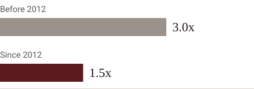

The carve-out playbook for non-core assets
Carve-out returns have fallen to buyout averages. Separation alone is no longer a value creation plan. Sponsors who win now plan separation and value creation as one programme.
Carve-outs used to be the easy money in private equity. Before 2012 the typical purchase of an unloved business unit from its corporate parent beat the average buyout more often than not. Bain’s 2025 Global Private Equity Report used DealEdge data to show carved-out companies of that era growing revenue by 31% and margins by 29% under sponsor ownership.
Since 2012 that edge has gone. The average carve-out has returned 1.5 times invested capital, slightly below the average buyout. Top-quartile carve-outs return 2.5 times against 2.7 times for top-quartile buyouts. Corporate sellers learned to run competitive auctions, more sponsors chased each asset and prices rose. Bain ties the decline to a fall in the operating improvements sponsors achieved after separation.
Average carve-out returns have halved since 2012
Average multiple on invested capital, private equity carve-outs

Deal volume has not followed returns down. S&P Global Market Intelligence counted 421 private equity carve-outs worldwide in 2025 against 384 in 2024. Their total value fell 13% over the same period to US$65.2bn. Andrew Wright, private equity M&A and advisory leader at Deloitte, described the market as broadening beyond a handful of megadeals. More, smaller carve-outs suit a mid-market sponsor.
Find the opportunity before it reaches an auction
Boards understandably spend most of their time on the divisions analysts and investors ask about. A unit too small to move the share price or the group P&L can sit for years without a strategy, a growth budget or a motivated management team with authority and incentives of its own. A sponsor who knows the sector can approach the parent directly, present the sale as a tidy decision for group management and agree terms before advisers slow the process and assemble a competitive field.
Rebuild the P&L from nothing
Few carve-outs come with genuinely standalone accounts. Shared costs are often allocated by formula. Central functions do work that nobody has costed; the unit is charged a pro-rated share instead. Even the unit’s reported margin is the group’s estimate of its own subsidiary. Bain makes the same point: seasoned sponsors decide early which people, assets, legal entities, data and systems sit inside the deal perimeter. I would build the standalone cost base line by line before agreeing a price. That includes every service the parent will provide under a transitional services agreement and the cost of replacing each one when the agreement ends.
One plan from day one
A common mistake is to treat separation as the first project and value creation as the second. Migrating IT, novating contracts and standing up payroll can absorb a management team before anyone touches pricing or growth. Bain concludes that the sponsors earning top-quartile carve-out returns today run the value creation plan (VCP) and separation together. The VCP decides which separation tasks come first.
A management team that has never stood alone
Heads of corporate divisions have usually run a budget. Many have never managed cash, lenders or a board that owns the business. Core functions such as marketing, HR and IT often sit with a corporate centre team.
I have seen these issues first hand. Clava began as technology built inside Digme, the boutique fitness business I ran, before becoming a standalone software company for climbing gyms. Parts of a division can transfer unchanged. A standalone business usually needs new infrastructure and people that a division never had to provide for itself.
Before bidding on a carve-out I would want three numbers on one page: the standalone cost base, the full cost of exiting the transitional services agreement and the first-year EBITDA the value creation plan needs to justify the price.